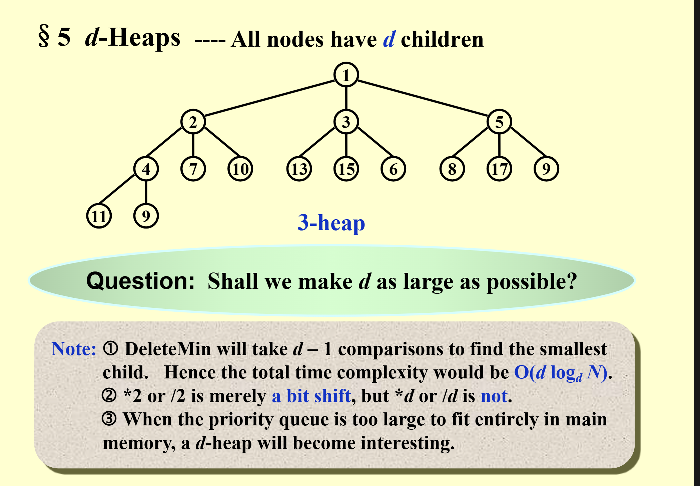

heap(优先队列)
定义
- heap用来解决什么问题？：堆（优先队列）一开始是用来解决一堆数删除最大/最小值的问题，当然也有插入操作。
- 我们发现，如果用链表或者数组来解决，都会出现O(n)的操作，heap就应运而生了。
- heap的定义：堆是一个完全二叉树，并且每个节点都大于等于它的左右孩子，或者小于等于它的左右孩子。由于是完全二叉树，所以可以用数组来表示，数组的索引从1开始，数组的索引为i的节点的父节点为i/2，左子节点为2i，右子节点为2i+1。
实现
1. heap的初始化
PriorityQueue Initialize(int MaxElements)
{
PriorityQueue H;
if (MaxElements < MinPQSize)
return Error("Priority queue size is too small");
H = malloc(sizeof(struct HeapStruct));
if (H == NULL)
return FatalError("Out of space!!!");
/* Allocate the array plus one extra for sentinel */
H->Elements = malloc((MaxElements + 1) * sizeof(ElementType));
if (H->Elements == NULL)
return FatalError("Out of space!!!");
H->Capacity = MaxElements;
H->Size = 0;
H->Elements[0] = MinData; /* set the sentinel 作用是简化代码，不怕越界*/
return H;
}
2. 插入（上浮）
- 插入的时候，先将元素插入到数组的最后，然后从后往前比较，如果比父节点大，就将父节点和当前节点交换，直到找到合适的位置。
- 代码：
/* H->Element[0] is a sentinel */
void Insert(ElementType X, PriorityQueue H)
{
int i;
if (IsFull(H)) {
Error("Priority queue is full");
return;
}
for (i = ++H->Size; H->Elements[i / 2] > X; i /= 2)
H->Elements[i] = H->Elements[i / 2]; //这里不怕是否越界，这就是0哨兵的作用，因为最后和0比一定比他大
H->Elements[i] = X;
}
3. 删除（下沉）
还记得我们的目的吗，找到最小的，所以我们删除也是为了删除最小的，而这就是根节点。
方法： 将根节点换成的最后一个元素，然后从上往下比较，如果比左右孩子小，就将当前节点和左右孩子中较小的那个交换，直到找到合适的位置。
- 代码：
ElementType DeleteMin( PriorityQueue H )
{
int i, Child;
ElementType MinElement, LastElement;
if ( IsEmpty( H ) ) {
Error( "Priority queue is empty" );
return H->Elements[ 0 ]; }
MinElement = H->Elements[ 1 ]; /* save the min element */
LastElement = H->Elements[ H->Size-- ]; /* take last and reset size */
for ( i = 1; i * 2 <= H->Size; i = Child ) { /* Find smaller child */
Child = i * 2;
if (Child != H->Size && H->Elements[Child+1] < H->Elements[Child])
Child++;
if ( LastElement > H->Elements[ Child ] ) /* Percolate one level */
H->Elements[ i ] = H->Elements[ Child ];
else break; /* find the proper position */
}
H->Elements[ i ] = LastElement;
return MinElement;
}
这就完成啦！！
其他操作
优先级变化
一个树（数组）变成堆
1.首先，如果一个一个插入，那么插入的时间复杂度是O(logn)，但是插入的次数是n，所以总时间复杂度是O(nlogn)。
2.但其实我们可以直接在原来的树组上进行操作，只需要从最后一个非叶子节点开始，依次上浮，直到根节点，这样时间复杂度就是O(n)（因为每个节点的操作数最多是他的高度，可以证明总操作数是O(n)）。
3.代码： 这里的代码包括了变成堆和堆排序
#include<iostream>
using namespace std;
void swap(int* a, int i, int m){
int temp = a[i];
a[i] = a[m];
a[m] = temp;
}
void heapify(int* a, int k, int index){
int min = index;
while(true){
if(index*2+1<k && a[index*2+1] < a[index]){
min = index*2+1;
}
if(index*2+2<k && a[index*2+2] < a[min]){
min = index*2+2;
}
if(min == index)break;
swap(a, index, min);
//从交换后的节点开始继续往下堆化
index = min;
}
}
void buildHeap(int* nums, int k){
for(int i=k/2-1; i>=0; i--){
heapify(nums, k, i);
}
}
void heapsort(int* nums, int k) {
buildHeap(nums, k);
for (int i = k - 1; i > 0; i--) {
swap(nums, 0, i);
heapify(nums, i, 0);
}
}
int main() {
int nums[6] = {4, 2, 8, 5, 3, 2};
heapsort(nums, 6);
for (int i = 0; i < 6; i++) {
cout << nums[i] << endl;
}
system("pause");
return 0;
}
应用
-
堆排序：堆排序就是利用堆这个数据结构，将数组变成堆，然后依次删除堆顶元素，最后剩下的就是有序的数组。
-
优先队列：堆排序就是利用堆这个数据结构，将数组变成堆，然后依次删除堆顶元素，最后剩下的就是有序的数组。
-
【Example】Given a list of N elements and an integer k.
Find the kth largest element.
d-heap
